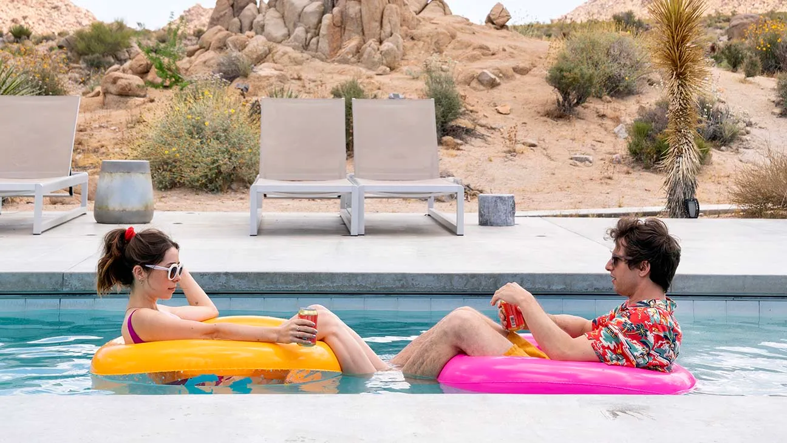
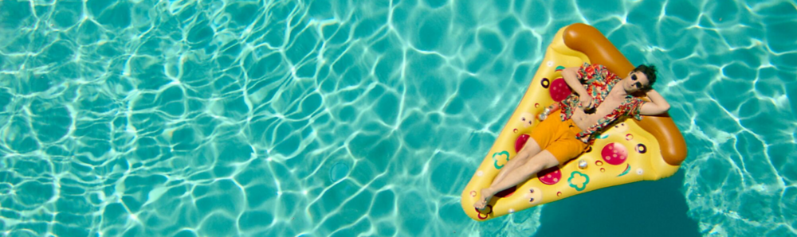
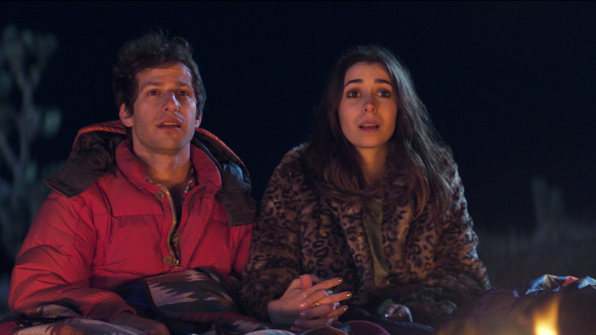
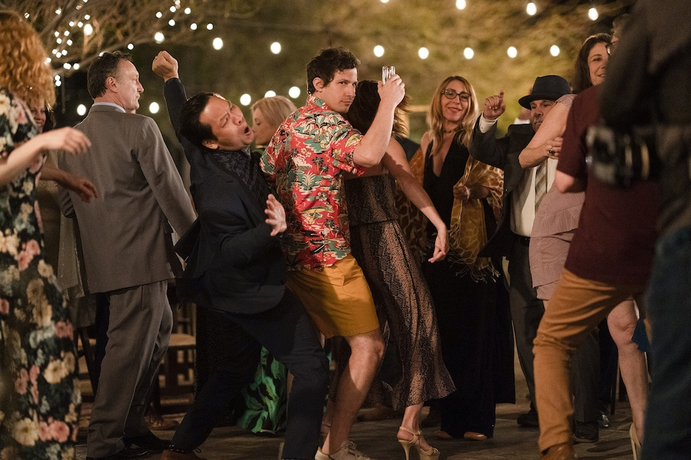

Antes de qualquer coisa, minha principal recomendação é: não leia absolutamente nada sobre Palm Springs. Sem trailer, sem sinopse, sem pesquisar elenco ou comentários. Apenas assista. Quanto menos você souber, melhor será a experiência. O filme funciona justamente por brincar constantemente com as expectativas do público, então entrar “às cegas” faz toda a diferença.

Agora sim: falando do filme em si, Palm Springs pega a clássica ideia de loop temporal e transforma em algo extremamente carismático, divertido e surpreendentemente criativo. É impossível não lembrar de Feitiço do Tempo, mas aqui existe uma identidade própria tão forte que, em certos momentos, quase parece injusto colocar os dois apenas na mesma categoria. Grande parte disso funciona graças à química absurda entre os protagonistas. Nyles e Sarah conseguem carregar tanto o humor quanto os momentos mais sinceros do roteiro sem esforço aparente. O filme encontra um equilíbrio muito raro entre comédia romântica, absurdo existencial e reflexão sobre rotina, tempo e propósito. E talvez esse seja o maior mérito da obra: fazer tudo isso sem nunca perder o ritmo leve e divertido.



Existe também uma sensação constante de querer falar muito sobre o filme… e ao mesmo tempo não querer revelar absolutamente nada. Algumas descobertas funcionam melhor quando acontecem naturalmente, e o roteiro sabe exatamente como entregar essas informações no momento certo. Tanto que certos segredos dos personagens acabam parecendo pequenos diante da verdadeira dimensão do tempo que aquele looping representa. E honestamente? A curta duração joga muito a favor da experiência. Palm Springs entende perfeitamente o tamanho da própria proposta e evita se desgastar. Durante sua uma hora e meia, o entretenimento é tão genuíno que fica até difícil imaginar o filme funcionando melhor com mais tempo de tela.
“Palm Springs transforma repetição em criatividade, provando que até o mesmo dia pode esconder experiências completamente novas com uma boa companhia.”
Ainda assim, nem tudo é perfeito. Os minutos finais do clímax talvez não tenham o mesmo impacto imprevisível do restante da obra. Depois de tantas ideias criativas e situações inesperadas, a conclusão segue um caminho relativamente mais seguro. Mas considerando que o filme nunca esconde seu lado de comédia romântica, talvez esse encerramento mais confortável faça sentido dentro da proposta. No fim, Palm Springs consegue transformar uma premissa já extremamente explorada em algo fresco, engraçado e genuinamente envolvente. E isso, por si só, já parece quase um milagre temporal.
✔ O QUE É BOM
- Excelente química entre os protagonistas
- Uso criativo e muito divertido do conceito de loop temporal.
- Ritmo ágil que evita desgaste da premissa.
✖ O QUE NÃO É BOM
- O clímax final perde parte da imprevisibilidade do restante do filme.
Discussão e Opiniões